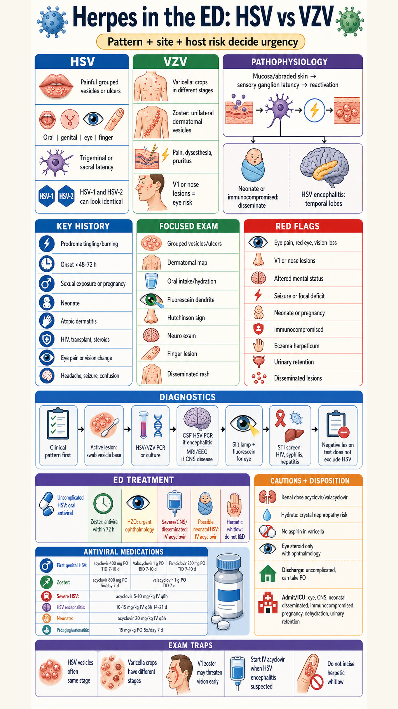

Tintinalli 9th local PDF + CDC STI cross-check Codex built-in image_gen remake

Source basis: Tintinalli Emergency Medicine 9th ed local PDF extract generated from the primary PDF on 2026-06-08, mainly Chapters 153/154 for genital HSV and HSV/VZV serious viral infection, Chapters 120/122/124/142 for neonatal, pediatric, eye, gingivostomatitis, eczema herpeticum, and varicella caveats, Chapter 250 for facial HSV/zoster/HZO oral dosing, Chapters 253/283 for herpetic whitlow, and Chapter 88 for acyclovir/valacyclovir renal cautions. Current cross-check: CDC STI Treatment Guidelines for genital HSV antiviral regimens. Image workflow: Codex built-in image_gen NotebookLM-style infographic; first generated image was rejected for a typo and regenerated; final generated bitmap was fitted to 2160x3840 and upscaled 2x to 4320x7680. No deterministic poster, no text patching, and no patient photograph was used.